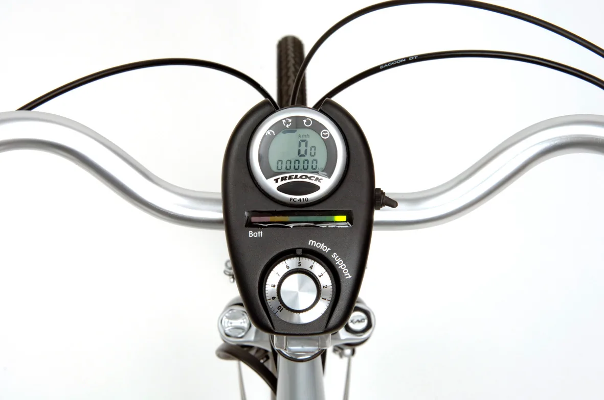
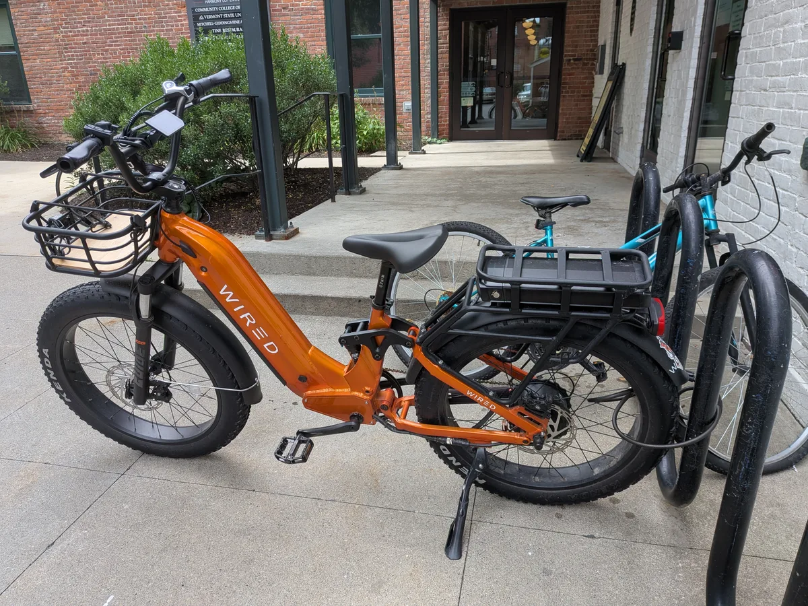
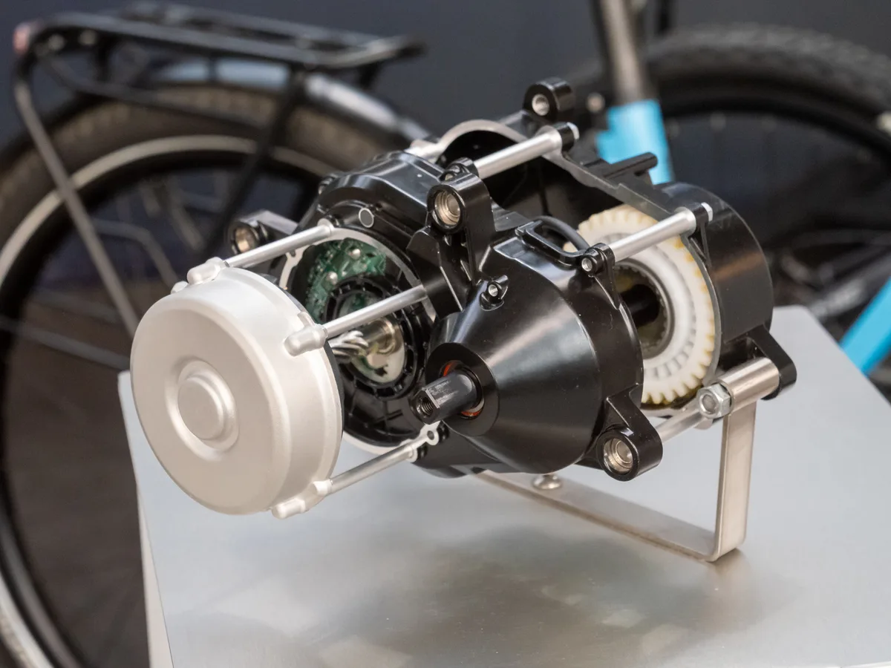

▲ 폭스바겐 스마트 e바이크. 후방 레이더와 카메라로 접근 차량을 감지한다 ⓒ 폭스바겐
자전거를 타다 가장 무서운 순간은 뒤가 안 보일 때입니다.
자동차에는 이 문제를 푸는 장치가 이미 있습니다. 후측방 경고입니다. 레이더가 뒤에서 오는 차를 감지해 사이드미러에 불을 켭니다.
폭스바겐이 그 기술을 자전거에 옮겼습니다. 감지 거리는 최대 70m입니다.
1. 스마트 뷰 — 뒤를 화면으로 본다
핵심 기능의 이름은 '스마트 뷰(Smart View)'입니다. 구성은 후방 레이더와 카메라입니다.
작동 방식은 이렇습니다.
- ① 레이더가 후방 최대 70m까지 접근 차량을 감지한다
- ② 감지되면 핸들바 디스플레이가 자동으로 후방 영상으로 전환된다
- ③ 위험 수준이면 주황색 경고 바가 표시된다
- ④ 사각지대에 차량이 있으면 별도 경고가 뜬다
'자동 전환'이 중요한 설계입니다. 라이더가 화면을 계속 보고 있어야 한다면 오히려 위험해집니다. 평소에는 속도나 배터리를 표시하다가, 필요할 때만 후방으로 바뀌는 구조입니다.
레이더를 쓰는 이유도 짚어둘 만합니다. 카메라만으로는 거리와 접근 속도를 정확히 재기 어렵습니다. 레이더는 반사파의 주파수 변화로 상대 속도를 직접 측정합니다. 어둡거나 비가 와도 성능 저하가 적습니다.
자동 조명도 들어갑니다. 방향지시등과 제동등 기능을 포함합니다. 자전거에서 수신호 대신 등화로 의사를 전달하는 방식입니다.

▲ 일반적인 e바이크의 핸들바 컨트롤러. 스마트 e바이크는 여기에 후방 영상과 경고를 띄운다 ⓒ 2can, Wikimedia Commons (CC BY-SA 4.0)
2. 헬멧과 안경까지 — 각각 499유로
본체만 파는 것이 아닙니다. 액세서리가 함께 나옵니다.
| 품목 | 가격 | 원화 환산(약 1,634원/유로) |
|---|---|---|
| 스마트 e바이크 | 3,999유로 | 약 650만 원 |
| 스마트 헬멧 | 499유로 | 약 82만 원 |
| 스마트 글라스 | 499유로 | 약 82만 원 |
| 스마트 시큐리티 패키지 | 149유로 | 약 24만 원 |
스마트 헬멧의 사양은 이렇습니다.
- 500루멘 이상 LED
- NTA 8776 인증 — 속도가 빠른 e바이크용 헬멧 규격이다. 일반 자전거 헬멧보다 보호 범위가 넓고 충격 흡수 기준이 높다.
- MIPS 시스템 — 헬멧 내부가 미세하게 회전해 비스듬한 충격에서 뇌의 회전 손상을 줄인다
- 충돌 감지 기능
- IP67 방진·방수, 1,350mAh 배터리
스마트 글라스는 마이크로 OLED 디스플레이를 넣은 안경으로, 무게는 47g입니다. 구글 지도 내비게이션이 표시됩니다.
전부 갖추면 4,997유로, 환율 기준 약 816만 원이 됩니다. 자전거 가격으로는 상당히 높은 수준입니다. 환산액은 세금과 국내 유통 비용을 뺀 단순 계산이라는 점도 감안해야 합니다.

▲ 일반 e바이크 대비 스마트 e바이크의 가격은 상당히 높은 편이다 ⓒ Artaxerxes, Wikimedia Commons (CC BY 4.0)
3. 자동차 회사가 자전거를 만드는 이유
제조는 폭스바겐이 직접 하지 않습니다. 제조사 n+가 "세계에서 가장 안전한 e바이크"를 목표로 개발했습니다.
그럼에도 폭스바겐 이름이 붙은 이유는 기술의 출처에 있습니다. 후측방 경고, 자동 조명, 충돌 감지는 자동차에서 검증된 기능입니다.
안전 측면에서 이 접근은 타당합니다. 자전거 사고에서 사망으로 이어지는 유형은 뒤에서 오는 차량과의 충돌이 큰 비중을 차지합니다. 라이더가 인지하지 못한 상태에서 발생하기 때문입니다.
다만 한계도 분명합니다.
- 경고는 회피가 아니다 — 차가 다가온다는 것을 알아도 자전거가 피할 공간이 없으면 소용이 없다
- 가격이 진입 장벽이다 — 572만 원짜리 자전거를 살 사람은 제한적이다
- 인프라가 근본 — 분리된 자전거 도로가 가장 확실한 안전 장치다
세 번째가 핵심입니다. 개별 장비로 위험을 관리하는 방식은 비용을 이용자에게 넘기는 구조이기도 합니다.

▲ e바이크의 구동계 자체는 성숙한 기술이다. 차별점은 안전 장비 쪽으로 옮겨가고 있다 ⓒ Matti Blume, Wikimedia Commons (CC BY-SA 4.0)
4. 국내에서는 어떻게 봐야 하나
국내 판매 계획은 발표되지 않았습니다. 유럽 기준 예약 주문이 열린 단계입니다.
들어온다고 해도 확인할 것이 있습니다.
- ① 전기자전거 분류 — 국내에서는 페달 보조 방식(PAS)이며 시속 25km에서 보조가 끊기고 자체 무게 30kg 미만이라는 요건을 충족해야 자전거도로 통행이 가능하다
- ② 스로틀 방식 여부 — 페달을 밟지 않아도 가는 방식이면 원동기장치자전거로 분류돼 면허와 통행 규정이 달라진다
- ③ 안전 인증 — 국내 판매를 위해서는 별도 인증 절차가 필요하다
- ④ 사후 지원 — 배터리와 전장 부품의 국내 A/S 체계가 갖춰지는지
첫 번째 항목이 실사용에서 가장 크게 갈립니다. 자전거도로를 못 타면 차도로 나가야 하고, 그렇게 되면 이 제품이 해결하려던 위험에 그대로 노출됩니다.

▲ 개별 장비보다 확실한 안전 장치는 분리된 통행 공간이다. 국내에서는 자전거도로 통행 요건 충족 여부가 실사용을 가른다 ⓒ AhmedAlElq, Wikimedia Commons (CC BY-SA 4.0)
공개는 2026년 9월 4~8일 독일 베를린에서 열리는 IFA 2026에서 이뤄집니다.
5. 정리
폭스바겐이 스마트 e바이크를 공개했습니다. 핵심은 스마트 뷰로, 후방 레이더와 카메라가 최대 70m 뒤에서 접근하는 차량을 감지해 핸들바 디스플레이에 자동으로 후방 영상을 띄우고 주황색 경고 바를 표시합니다.
가격은 3,999유로(환율 약 1,634원 기준 약 650만 원)이며, 스마트 헬멧과 스마트 글라스가 각 499유로, 시큐리티 패키지가 149유로입니다. 헬멧은 NTA 8776 인증과 MIPS를 갖췄고, 글라스는 47g에 마이크로 OLED를 넣었습니다.
제조는 n+가 맡았고, 공개는 2026년 9월 4~8일 IFA 2026입니다. 국내 판매 계획은 발표되지 않았으며, 도입 시 전기자전거 분류 요건 충족 여부가 실사용을 좌우합니다.